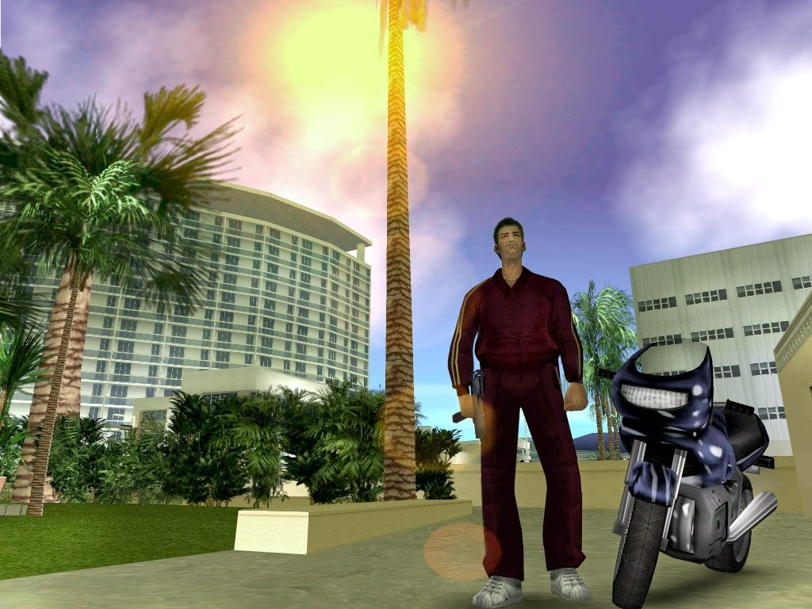
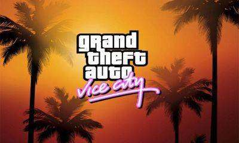
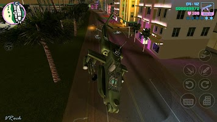

Grand Theft Auto: Vice City es un juego arcade desarrollado por Rockstar Games. El App player BlueStacks es la mejor plataforma para jugar este juego de Android en tu PC o Mac y obtener una experiencia de juego inmersiva.
Descarga Grand Theft Auto: Vice City en PC. Bienvenido a Vice City. Bienvenido a los años 80. De la década de los peinados imposibles, los excesos y los trajes color pastel llega la historia del ascenso de un hombre a lo más alto del escalafón criminal.
Vice City, una inmensa urbe que comprende playas, pantanos, barrios elegantes y guetos, es una de las ciudades digitales más variadas, completas y rebosantes de vida jamás creadas.
En el juego, que combina una mecánica de mundo abierto con una historia que avanza gracias a sus personajes, llegarás a una ciudad rebosante de lujo y degradación que te permitirá triunfar de la forma que elijas.
Para celebrar su décimo aniversario, Rockstar Games lleva Grand Theft Auto: Vice City a dispositivos móviles con gráficos de alta resolución, controles mejorados y un buen número de características nuevas.
¡Descarga Grand Theft Auto: Vice City en PC con BlueStacks hoy completamente gratis!
|  |  |  | |
|---|---|---|---|
| Trailer | Trucos | Consejos | Recomendaciones |